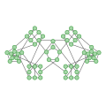
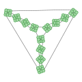
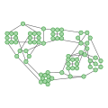
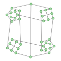
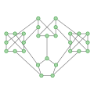
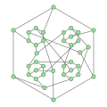
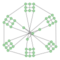

Research Interests
I work on graph theory problems, focused on various graph decomposition questions, mostly on cubic graphs and snarks. Lean formalizations of the Graph Puzzles results are collected in graph-puzzles-lean.
Preprints Previews (AI-slop drafts)
The following drafts contain results obtained in dialogue and with substantial help from AI models.
- Graph Puzzles III.3-preview: Oriented five-cycle double covers of snarks with colouring defect three, Zenodo working paper, 2026; Lean formalization.
- Graph Puzzles IV.2-preview: Four perfect matchings for snarks with a two-circuit 2-factor, Zenodo working paper, 2026; Lean formalization.
- Graph Puzzles IV.1-preview: Factorisations of hypohamiltonian and permutation snarks, Zenodo working paper, 2026; Lean formalization.
- Graph Puzzles III.2-preview: Strong five-cycle double covers, Zenodo working paper, 2026; Lean formalization.
Preprints
- Disproving the Petersen Coloring Conjecture: Theoretical Analysis and an Infinite Family of Counterexamples, with Jan Goedgebeur, Jorik Jooken, Edita Máčajová, Davide Mattiolo and Giuseppe Mazzuoccolo, submitted, 2026.
- Graph Puzzles III.1: A Proof of Sabidussi's Compatibility Conjecture, submitted, 2026; Lean formalizations: sabidussi-lean, graph-puzzles-lean.
- Graph Puzzles II.1: Counterexamples to Jain's Second Unit Vector Flows Conjecture, preprint, 2026.
- Open problems of the 33rd Workshop on Cycles and Colourings, entry: Almost-ℤ22 and almost-ℤ4 connectivities for snarks, 2025.
- Graph Puzzles I.1: Oriented Berge-Fulkerson Conjecture, preprint, 2025.
Graph Puzzles (click to expand)
Graph Puzzles I
- Graph Puzzles I.1: Oriented Berge-Fulkerson Conjecture, preprint, 2025.
Graph Puzzles II
Graph Puzzles III
- Graph Puzzles III.1: A Proof of Sabidussi's Compatibility Conjecture, submitted, 2026; Lean formalizations: sabidussi-lean, graph-puzzles-lean.
- Graph Puzzles III.2-preview: Strong five-cycle double covers, Zenodo working paper, 2026; Lean formalization.
- Graph Puzzles III.3-preview: Oriented five-cycle double covers of snarks with colouring defect three, Zenodo working paper, 2026; Lean formalization.
Graph Puzzles IV
- Graph Puzzles IV.1-preview: Factorisations of hypohamiltonian and permutation snarks, Zenodo working paper, 2026; Lean formalization.
- Graph Puzzles IV.2-preview: Four perfect matchings for snarks with a two-circuit 2-factor, Zenodo working paper, 2026; Lean formalization.
House of Graphs entries

Hypohamiltonian permutation snark of colouring defect 4, 58 vertices, 2026.
Snark without oriented (2,4,4)-flows double cover, 108 vertices, 2026.
Snark without an oriented 6-cycle 4-cover, 70 vertices, 2026.
Non-Petersen snark without an oriented 9-cycle 6-cover, 38 vertices, 2026.
Smallest snark counterexample to 3 disjoint Bipartizing Matchings question, 28 vertices, 2026.
One of 20 smallest counterexamples to double-core conjecture, 38 vertices, 2026.
Small counterexample to the Petersen colouring conjecture, 52 vertices, 2026.